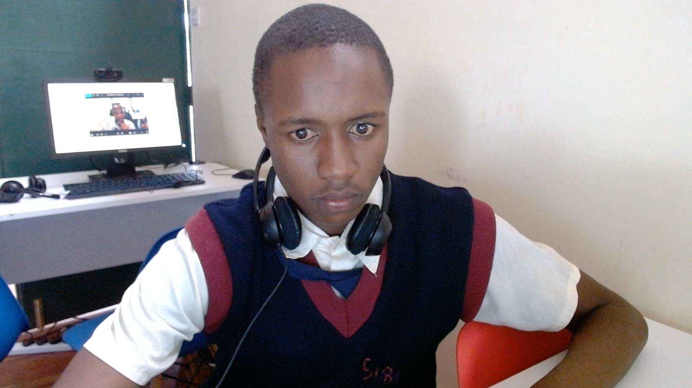

my resume

Summary
I am an intelligent young man with good leadership qualities.
Also a friendly guy who is always ready to give a hand
Education
computer science,robotics & teaching
- diloma in computer science,studing in oxford university since 2021-2027
Skills
- Languages: Python, Java, C/C++, JavaScript, Go, Rust
Paradigms: Object-Oriented Programming (OOP), Functional Programming
Version Control: Git, GitHub/GitLab
Debugging & Testing: Unit testing (e.g., JUnit, PyTest), integration testing
Development Environments: IDEs like VS Code, IntelliJ, Eclipse
Contact Me
My Hobbies